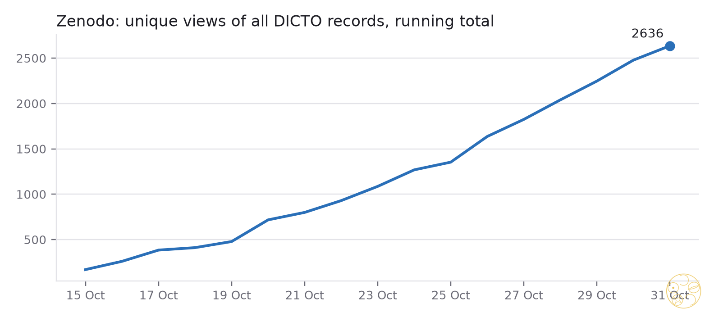
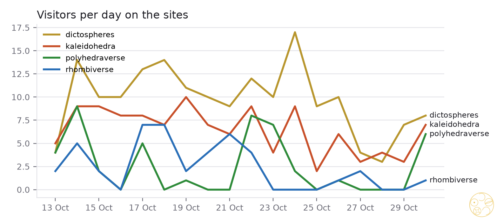
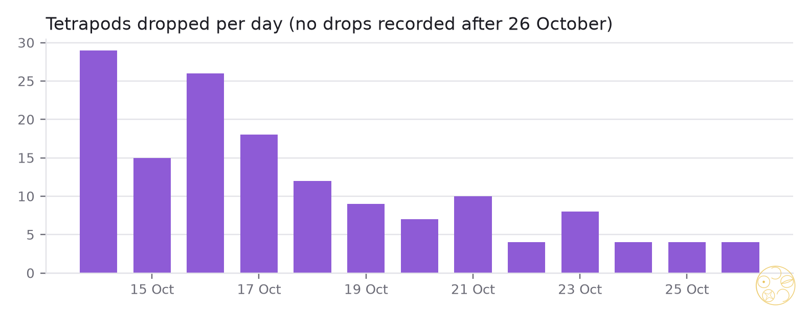

Readers and visitors, week to 30 October 2026

Unique views across all records rose from 930 on 22 October to 2636 today: about 190 new readers a day, without a single flat day. This week added 1391 views, 68% more than the week before. Without Collected Works the week added 1262, so readers open the single papers, not only the overview. All-time downloads: 3550 (many by bots).
| Most read this week (unique views gained) | Gained | Downloads |
|---|---|---|
| The Rule of Halves (#57) | 38 | 9 |
| The Delian Bond (#51) | 36 | 5 |
| The Golden Split (#48) | 31 | 4 |
| The Web of Bonds (#52) | 31 | 5 |
| Sonsam and Lahdeli (#56) | 30 | 7 |
| One Move Each (#50) | 29 | 5 |
| DICTO Kyushindo Cores (#43) | 24 | 6 |
| The Global Web of Bonds (#53) | 24 | 7 |
| The White Queen 600-cell (#63) | 23 | 9 |
| The Red Queen 120-cell (#65) | 23 | 7 |
What it says. The octet, bonds, halves and space-filling papers lead: that line is what draws readers in. The Polyhedral Stretching Theorem (#49) is the one people keep: 19 downloads from 43 views. Collected Works alone: 178 views, 79 downloads.
Books. Quanta of Space 13 views, HexOct 13, Alicia 1, The Golden Cycle 0. Alicia and The Golden Cycle have new records from 30–31 October and Zenodo's counts lag a day or two, so their zeros mean "not counted yet". The newest papers (#76–#80) are in the same position: read them again next week.

| Page views | 17–23 Oct | 24–30 Oct |
|---|---|---|
| dictospheres.com | 270 | 160 |
| Kaleidohedra | 145 | 119 |
| Polyhedraverse | 52 | 18 |
| Rhombiverse | 81 | 7 |
The week of 17–23 October carried the launch of the papers and the apps; this week fell back towards a base of 5–10 visitors a day on dictospheres and Kaleidohedra. On 30 October all three apps were back above their weekly average (Kaleidohedra 7, Polyhedraverse 6). Today's new cards with "View in app" links, the Star step and the Rhombiverse lattice choice give Zenodo readers more ways into the apps.

150 tetrapods in all. Drops were highest in the first days (29 on 14 October, 26 on 16 October), settled at 2–4 a day, and none are recorded after 26 October. From 29 October the page could not work at all: the one-site move put the apps' security rule on dictospheres.com too, which blocked the heap's 3D library, fonts and database. The fix (a rule of its own for dictospheres.com) ships tonight at 21:00. Watch the next days to see whether drops return.
About 4 visitors a week across all repositories. People come through dictospheres.com and Zenodo, not GitHub; nothing to change.
Data: ~/dicto-stats/history.json and data/2026-10-24.json, 2026-10-31.json (daily cron 05:30); site counts from Vercel Web Analytics (visitors per day), Zenodo from the records API (unique views of all versions), tetrapods from the Supabase heap. Charts: studies/2026-10-31-stats-analysis/scripts/charts.py.